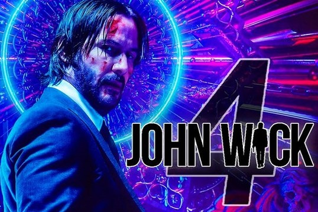

Неудачный фильм из вселенной "Заклятие", хотя успешный в кассовом плане. Сначала о плюсе. Понравилось, что главную героиню играет Таисса Фармига, на 20 лет младшая сестра Верки Фармига, которая играет в главной роли во всех сериях...
John Week4 (2021)
Самое ожидаемое кино
10

У Джона Уика забот невпроворот — чем сильнее он стремится выйти из игры, тем больше людей оказываются в неё втянутыми. По итогам третьей части нас, скорее всего, ждёт полномасштабная война кланов, ведь теперь у Джона есть союзник в лице Голубиного короля. История о киллере-мстителе уже разрослась до самостоятельной вселенной, отель «Континенталь» удостоен отдельного сериала, а директриса театра Тарковского отдельного спин-оффа «Балерина», а значит есть надежда, что новые знакомые Джона перестанут умирать после 10 минут экранного времени.
Okko — это тысячи популярных фильмов, сериалов и самых свежих новинок. Смотрите фильм «Джон Уик 4» (John Wick: Chapter 4, 2022) онлайн в хорошем качестве (SD) с профессиональной озвучкой на русском языке или с субтитрами.
Снайпер(2014)
Последний просмотренный фильм
10
Экранизация мемуаров «морского котика» из Техаса Криса Кайла, который служил снайпером в Ираке и стал рекордсменом по числу убитых солдат противника, за что иракцы прозвали его дьяволом. Кроме самой войны, фильм рассказывает о воспоминаниях жены Криса, которая была свидетелем растущей привязанности мужа к его сослуживцам.